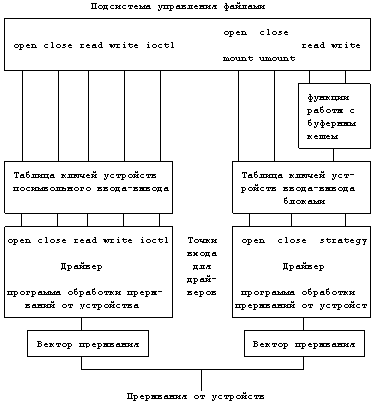
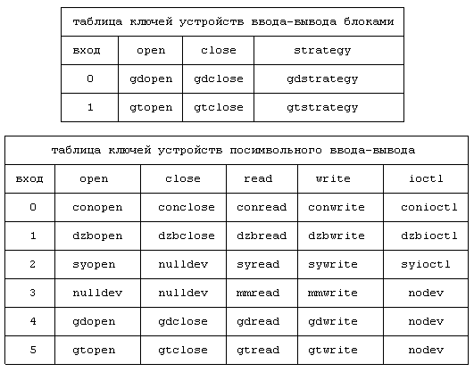
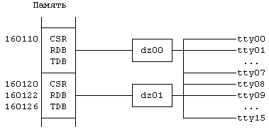
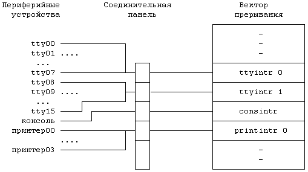

В системе UNIX имеется два типа устройств - устройства ввода/вывода блоками и устройства неструктурированного или посимвольного ввода-вывода. Как уже говорилось в главе 2, устройства ввода-вывода блоками, такие как диски и ленты, для остальной части системы выглядят как запоминающие устройства с произвольной выборкой; к устройствам посимвольного ввода-вывода относятся все другие устройства, в том числе терминалы и сетевое оборудование. Устройства ввода-вывода блоками могут иметь интерфейс и с устройствами посимвольного ввода-вывода.
Пользователь взаимодействует с устройствами через посредничество файловой системы (см. Рисунок 2.1). Каждое устройство имеет имя, похожее на имя файла, и пользователь обращается к нему как к файлу. Специальный файл устройства имеет индекс и занимает место в иерархии каталогов файловой системы. Файл устройства отличается от других файлов типом файла, хранящимся в его индексе, либо "блочный", либо "символьный специальный", в зависимости от устройства, которое этот файл представляет. Если устройство имеет как блочный, так и символьный интерфейс, его представляют два файла: специальный файл устройства ввода-вывода блоками и специальный файл устройства посимвольного ввода-вывода. Системные функции для обычных файлов, такие как open, close, read и write, имеют то же значение и для устройств, в чем мы убедимся позже. Системная функция ioctl предоставляет процессам возможность управлять устройствами посимвольного ввода-вывода, но не применима в отношении к файлам обычного типа (*). Тем не менее, драйверам устройств нет необходимости поддерживать полный набор системных функций. Например, вышеупомянутый драйвер трассировки дает процессам возможность читать записи, созданные другими драйверами, но не позволяет создавать их.
Задание конфигурации системы это процедура указания администраторами значений параметров, с помощью которых производится настройка системы. Некоторые из параметров указывают размеры таблиц ядра, таких как таблица процессов, таблица индексов и таблица файлов, а также сколько буферов помещается в буферном пуле. С помощью других параметров указывается конфигурация устройств, то есть производятся конкретные указания ядру, какие устройства включаются в данную системную реализацию и их "адрес". Например, в конфигурации может быть указано, что терминальная плата вставлена в соответствующий разъем на аппаратной панели.
Существует три стадии, на которых может быть указана конфигурация устройств. Во-первых, администраторы могут кодировать информацию о конфигурации в файлах, которые транслируются и компонуются во время построения ядра. Информация о конфигурации обычно указывается в простом формате, и программа конфигурации преобразует ее в файл, готовый для трансляции. Во-вторых, администраторы могут указывать информацию о конфигурации после того, как система уже запущена; ядро динамически корректирует внутренние таблицы конфигурации. Наконец, самоидентифицирующиеся устройства дают ядру возможность узнать, какие из устройств включены. Ядро считывает аппаратные ключи для самонастройки. Подробности задания системной конфигурации выходят за пределы этой книги, однако во всех случаях результатом процедуры задания конфигурации является генерация или заполнение таблиц, составляющих основу программ ядра.
Интерфейс "ядро - драйвер" описывается в таблице ключей устройств ввода-вывода блоками и в таблице ключей устройств посимвольного ввода-вывода (Рисунок 10.1). Каждый тип устройства имеет в таблице точки входа, которые при выполнении системных функций адресуют ядро к соответствующему драйверу. Функции open и close, вызываемые файлом устройства, "пропускаются" через таблицы ключей устройств в соответствии с типом файла. Функции mount и umount так же вызывают выполнение процедур открытия и закрытия устройств, но для устройств ввода-вывода блоками. Функции read и write, вызываемые устройствами ввода-вывода блоками и файлами в смонтированных файловых системах, запускают алгоритмы работы с буферным кешем, инициирующие реализацию стратегической процедуры работы с устройствами. Некоторые из драйверов запускают эту процедуру изнутри из процедур чтения и записи. Более подробно взаимодействие с каждым драйвером рассматривается в следующем разделе.
Интерфейс "аппаратура - драйвер" состоит из машинно-зависимых управляющих регистров или команд ввода-вывода для управления устройствами и векторами прерываний: когда происходит прерывание от устройства, система идентифицирует устройство, вызвавшее прерывание, и запускает программу обработки соответствующего прерывания. Очевидно, что "программные устройства", такие как драйвер системы построения профиля ядра (глава 8) не имеют аппаратного интерфейса, однако программы обработки других прерываний могут обращаться к "обработчику программного прерывания" непосредственно. Например, программа обработки прерывания по таймеру обращается к программе обработки прерывания системы построения профиля ядра.
Администраторы устанавливают специальные файлы устройств командой mknod, в которой указывается тип файла (блочный или символьный), старший и младший номера устройства. Команда mknod запускает выполнение системной функции с тем же именем, создающей файл устройства. Например, в командной строке
mknod /dev/tty13 c 2 13
"/dev/tty13" - имя файла устройства, "c" указывает, что тип файла - "символьный специальный" ("b", соответственно, блочный), "2" - старший номер устройства, "13" - младший номер устройства. Старший номер устройства показывает его тип, которому соответствует точка входа в таблице ключей устройств, младший номер устройства - это порядковый номер единицы устройства данного типа. Если процесс открывает специальный блочный файл с именем "/dev/dsk1" и кодом 0, ядро запускает программу gdopen в точке 0 таблицы ключей устройств блочного ввода-вывода (Рисунок 10.2); если процесс читает специальный символьный файл с именем "/dev/mem" и кодом 3, ядро запускает программу mmread в точке 3 таблицы ключей устройств посимвольного ввода-вывода. Программа nulldev - это "пустая" программа, используемая в тех случаях, когда отсутствует необходимость в конкретной функции драйвера. С одним старшим номером устройства может быть связано множество периферийных устройств; младший номер устройства позволяет отличить их одно от другого. Не нужно создавать специальные файлы устройств при каждой загрузке системы; их только нужно корректировать, если изменилась конфигурация системы, например, если к установленной конфигурации были добавлены устройства.

Рисунок 10.1. Точки входа для драйверов
В этом разделе рассматривается взаимодействие ядра с драйверами устройств. При выполнении тех системных функций, которые используют дескрипторы файлов, ядро, следуя за указателями, хранящимися в пользовательском дескрипторе файла, обращается к таблице файлов ядра и к индексу, где оно проверяет тип файла, и переходит к таблице ключей устройств ввода-вывода блоками или символами. Ядро извлекает из индекса старший и младший номера устройства, использует старший номер в качестве указателя на точку входа в соответствующей таблице и вызывает выполнение функции драйвера в соответствии с выполняемой системной функцией, передавая младший номер в качестве параметра. Важным различием в реализации системных функций для файлов устройств и для файлов обычного типа является то, что индекс специального файла не блокируется в то время, когда ядро выполняет программу драйвера. Драйверы часто приостанавливают свою работу, ожидая связи с аппаратными средствами или поступления данных, поэтому ядро не в состоянии определить, на какое время процесс будет приостановлен. Если индекс заблокирован, другие процессы, обратившиеся к индексу (например, посредством системной функции stat), приостановятся на неопределенное время, поскольку один процесс приостановил драйвер.

Рисунок 10.2. Пример заполнения таблиц ключей устройств ввода-вывода блоками и символами
Драйвер устройства интерпретирует параметры вызова системной функции в отношении устройства. Драйвер поддерживает структуры данных, описывающие состояние каждой контролируемой единицы данного типа устройства; функции драйвера и программы обработки прерываний реализуются в соответствии с состоянием драйвера и с тем, какое действие выполняется в этот момент (например, данные вводятся или выводятся). Теперь рассмотрим каждый интерфейс более подробно.
алгоритм open /* для драйверов устройств */
входная информация: имя пути поиска
режим открытия
выходная информация: дескриптор файла
{
преобразовать имя пути поиска в индекс, увеличить значе-
ние счетчика ссылок в индексе;
выделить в таблице файлов место для пользовательского
дескриптора файла, как при открытии обычного файла;
выбрать из индекса старший и младший номера устройства;
сохранить контекст (алгоритм setjmp) в случае передачи
управления от драйвера;
если (устройство блочного типа)
{
использовать старший номер устройства в качестве ука-
зателя в таблице ключей устройств ввода-вывода бло-
ками;
вызвать процедуру открытия драйвера по данному индек-
су: передать младший номер устройства, режимы откры-
тия;
}
в противном случае
{
использовать старший номер устройства в качестве ука-
зателя в таблице ключей устройств посимвольного вво-
да-вывода;
вызвать процедуру открытия драйвера по данному индек-
су: передать младший номер устройства, режимы откры-
тия;
}
если (открытие в драйвере не выполнилось)
привести таблицу файлов к первоначальному виду,
уменьшить значение счетчика в индексе;
}
|
Рисунок 10.3. Алгоритм открытия устройства
10.1.2.1 Open
При открытии устройства ядро следует той же процедуре, что и при открытии файлов обычного типа (см. раздел 5.1), выделяя в памяти индексы, увеличивая значение счетчика ссылок и присваивая значение точки входа в таблицу файлов и пользовательского дескриптора файла. Наконец, ядро возвращает значение пользовательского дескриптора файла вызывающему процессу, так что открытие устройства выглядит так же, как и открытие файла обычного типа. Однако, перед тем, как вернуться в режим задачи, ядро запускает зависящую от устройства процедуру open (Рисунок 10.3). Для устройства ввода-вывода блоками запускается процедура open, закодированная в таблице ключей устройств ввода-вывода блоками, для устройств посимвольного ввода-вывода - процедура open, закодированная в соответствующей таблице. Если устройство имеет как блочный, так и символьный тип, ядро запускает процедуру open, соответствующую типу файла устройства, открытого пользователем: обе процедуры могут даже быть идентичны, в зависимости от конкретного драйвера.
Зависящая от типа устройства процедура open устанавливает связь между вызывающим процессом и открываемым устройством и инициализирует информационные структуры драйвера. Например, процедура open для терминала может приостановить процесс до тех пор, пока в машину не поступит сигнал (аппаратный) о том, что пользователь предпринял попытку зарегистрироваться. После этого инициализируются информационные структуры драйвера в соответствии с принятыми установками терминала (например, скоростью передачи информации в бодах). Для "программных устройств", таких как память системы, процедура open может не включать в себя инициализацию.
Если во время открытия устройства процессу пришлось приостановиться по какой-либо из внешних причин, может так случиться, что событие, которое должно было бы вызвать возобновление выполнения процесса, так никогда и не произойдет. Например, если на данном терминале еще не зарегистрировался ни один из пользователей, процесс getty, "открывший" терминал (раздел 7.9), приостанавливается до тех пор, пока пользователем не будет предпринята попытка регистрации, при этом может пройти достаточно большой промежуток времени. Ядро должно иметь возможность возобновить выполнение процесса и отменить вызов функции open по получении сигнала: ему следует сбросить индекс, отменить точку входа в таблице файлов и пользовательский дескриптор файла, которые были выделены перед входом в драйвер, поскольку открытие не произошло. Ядро сохраняет контекст процесса, используя алгоритм setjmp (раздел 6.4.4), прежде чем запустить процедуру open; если процесс возобновляется по сигналу, ядро восстанавливает контекст процесса в том состоянии, которое он имел перед обращением к драйверу, используя алгоритм longjmp (раздел 6.4.4), и возвращает системе все выделенные процедуре open структуры данных. Точно так же и драйвер может уловить сигнал и очистить доступные ему структуры данных, если это необходимо. Ядро также переустанавливает структуры данных файловой системы, когда драйвер сталкивается с исключительными ситуациями, такими, как попытка пользователя обратиться к устройству, отсутствующему в данной конфигурации. В подобных случаях функция open не выполняется.
Процессы могут указывать значения различных параметров, характеризующие особенности выполнения процедуры открытия. Из них наиболее часто используется "no delay" (без задержки), означающее, что процесс не будет приостановлен во время выполнения процедуры open, если устройство не готово. Системная функция open возвращает управление немедленно и пользовательский процесс не узнает, произошло ли аппаратное соединение или нет. Открытие устройства с параметром "no delay", кроме всего прочего, затронет семантику вызова функции read, что мы увидим далее (раздел 10.3.4).
Если устройство открывается многократно, ядро обрабатывает пользовательские дескрипторы файлов, индекс и записи в таблице файлов так, как это описано в главе 5, запуская определяемую типом устройства процедуру open при каждом вызове системной функции open. Таким образом, драйвер устройства может подсчитать, сколько раз устройство было "открыто", и прервать выполнение функции open, если количество открытий приняло недопустимое значение. Например, имеет смысл разрешить процессам многократно "открывать" терминал на запись для того, чтобы пользователи могли обмениваться сообщениями. Но при этом не следует допускать многократного "открытия" печатающего устройства для одновременной записи, так как процессы могут затереть друг другу информацию. Эти различия имеют смысл скорее на практике, нежели на стадии разработки: разрешение одновременной записи на терминалы способствует установлению взаимодействия между пользователями; запрещение одновременной записи на принтеры служит повышению читабельности машинограмм (**).
алгоритм close /* для устройств */
входная информация: дескриптор файла
выходная информация: отсутствует
{
выполнить алгоритм стандартного закрытия (глава 5ххх);
если (значение счетчика ссылок в таблице файлов не 0)
перейти на finish;
если (существует еще один открытый файл, старший и млад-
ший номера которого совпадают с номерами закрываемого
устройства)
перейти на finish; /* не последнее закрытие */
если (устройство символьного типа)
{
использовать старший номер в качестве указателя в
таблице ключей устройства посимвольного ввода-выво-
да;
вызвать процедуру закрытия, определяемую типом драй-
вера и передать ей в качестве параметра младший но-
мер устройства;
}
если (устройство блочного типа)
{
если (устройство монтировано)
перейти на finish;
переписать блоки устройства из буферного кеша на уст-
ройство;
использовать старший номер в качестве указателя в
таблице ключей устройства ввода-вывода блоками;
вызвать процедуру закрытия, определяемую типом драй-
вера и передать ей в качестве параметра младший но-
мер устройства;
сделать недействительными блоки устройства, оставшие-
ся в буферном кеше;
}
finish:
освободить индекс;
}
|
Рисунок 10.4. Алгоритм закрытия устройства
10.1.2.2 Closе
Процесс разрывает связь с открытым устройством, закрывая его. Однако, ядро запускает определяемую типом устройства процедуру close только в последнем вызове функции close для этого устройства, и то только если не осталось процессов, которым устройство необходимо открытым, поскольку процедура закрытия устройства завершается разрывом аппаратного соединения; отсюда ясно, что ядру следует подождать, пока не останется ни одного процесса, обращающегося к устройству. Поскольку ядро запускает процедуру открытия устройства при каждом вызове системной функции open, а процедуру закрытия только один раз, драйверу устройства неведомо, сколько процессов используют устройство в данный момент. Драйверы могут легко выйти из строя, если при их написании не соблюдалась осторожность: когда при выполнении процедуры close они приостанавливают свою работу и какой-нибудь процесс открывает устройство до того, как завершится процедура закрытия, устройство может стать недоступным для работы, если в результате комбинации вызовов open и close сложилась нераспознаваемая ситуация.
Алгоритм закрытия устройства похож на алгоритм закрытия файла обычного типа (Рисунок 10.4). Однако, до того, как ядро освобождает индекс, в нем выполняются действия, специфичные для файлов устройств.
- Просматривается таблица файлов для того, чтобы убедиться в том, что ни одному из процессов не требуется, чтобы устройство было открыто. Чтобы установить, что вызов функции close для устройства является последним, недостаточно положиться на значение счетчика ссылок в таблице файлов, поскольку несколько процессов могут обращаться к одному и тому же устройству, используя различные точки входа в таблице файлов. Так же недос таточно положиться на значение счетчика в таблице индексов, поскольку одному и тому же устройству могут соответствовать несколько файлов устройства. Например, команда ls -l покажет, что одному и тому же устройству символьного типа ("c" в начале строки) соответствуют два файла устройства, старший и младший номера у которых (9 и 1) совпадают. Значение счетчика связей для каждого файла, равное 1, говорит о том, что имеется два индекса.
crw--w--w- 1 root vis 9, 1 Aug 6 1984 /dev/tty01
crw--w--w- 1 root unix 9, 1 May 3 15:02 /dev/tty01
Если процессы открывают оба файла независимо один от другого, они обратятся к разным индексам одного и того же устройства.
- Если устройство символьного типа, ядро запускает процедуру закрытия устройства и возвращает управление в режим задачи. Если устройство блочного типа, ядро просматривает таблицу результатов монтирования и проверяет, не располагается ли на устройстве смонтированная файловая система. Если такая система есть, ядро не сможет запустить процедуру закрытия устройства, поскольку не был сделан последний вызов функции close для устройства. Даже если на устройстве нет смонтированной файловой системы, в буферном кеше еще могут находиться блоки с данными, оставшиеся от смонтированной ранее файловой системы и не переписанные на устройство, поскольку имели пометку "отложенная запись". Поэтому ядро просматривает буферный кеш в поисках таких блоков и переписывает их на устройство перед запуском процедуры закрытия устройства. После закрытия устройства ядро вновь просматривает буферный кеш и делает недействительными все буферы, которые содержат блоки для только что закрытого устройства, в то же вре мя позволяя буферам с актуальной информацией остаться в кеше.
- Ядро освобождает индекс файла устройства. Короче говоря, процедура закрытия устройства разрывает связь с устройством и инициализирует заново информационные структуры драйвера и аппаратную
часть устройства с тем, чтобы ядро могло бы позднее открыть устройство вновь.
10.1.2.3 Read и Writе
Алгоритмы чтения и записи ядром на устройстве похожи на аналогичные алгоритмы для файлов обычного типа. Если процесс производит чтение или запись на устройстве посимвольного ввода-вывода, ядро запускает процедуры read или write, определяемые типом драйвера. Несмотря на часто встречающиеся ситуации, когда ядро осуществляет передачу данных непосредственно между адресным пространством задачи и устройством, драйверы устройств могут буферизовать информацию внутри себя. Например, терминальные драйверы для буферизации данных используют символьные списки (раздел 10.3.1). В таких случаях драйвер устройства выделяет "буфер", копирует данные из пространства задачи при выполнении процедуры write и выводит их из "буфера" на устройство. Процедура записи, управляемая драйвером, регулирует объем выводимой информации (т.н. управление потоком данных): если процессы генерируют информацию быстрее, чем устройство выводит ее, процедура записи приостанавливает выполнение процессов до тех пор, пока устройство не будет готово принять следующую порцию данных. При чтении драйвер устройства помещает данные, полученные от устройства, в буфер и копирует их из буфера в пользовательские адреса, указанные в вызове системной функции.

Рисунок 10.5. Отображение в памяти ввода-вывода с использованием контроллера VAX DZ11
Конкретный метод взаимодействия драйвера с устройством определяется особенностями аппаратуры. Некоторые из машин обеспечивают отображение ввода-вывода в памяти, подразумевающее, что конкретные адреса в адресном пространстве ядра являются не номерами ячеек в физической памяти, а специальными регистрами, контролирующими соответствующие устройства. Записывая в указанные регистры управляющие параметры в соответствии со спецификациями аппаратных средств, драйвер осуществляет управление устройством. Например, контроллер ввода-вывода для машины VAX-11 содержит специальные регистры для записи информации о состоянии устройства (регистры контроля и состояния) и для передачи данных (буферные регистры), которые формируются по специальным адресам в физической памяти. В частности, терминальный контроллер VAX DZ11 управляет 8 асинхронными линиями терминальной связи (см. [Levy 80], где более подробно объясняется архитектура машин VAX). Пусть регистр контроля и состояния (CSR) для конкретного терминала DZ11 имеет адрес 160120, передающий буферный регистр (TDB) - адрес 120126, а принимающий буферный регистр (RDB) - адрес 160122 (Рисунок 10.5). Для того, чтобы передать символ на терминал "/dev/tty09", драйвер терминала записывает единицу (1 = 9 по модулю 8) в указанный двоичный разряд регистра контроля и состояния и затем записывает символ в передающий буферный регистр. Запись в передающий буферный регистр является передачей данных. Контроллер DZ11 выставляет бит "выполнено" в регистре контроля и состояния, когда готов принять следующую порцию данных. Дополнительно драйвер может выставить бит "возможно прерывание передачи" в регистре контроля и состояния, что заставляет контроллер DZ11 прерывать работу системы, когда он готов принять следующую порцию данных. Чтение данных из DZ11 производится аналогично.
На других машинах имеется программируемый ввод-вывод, подразумевающий, что в машине имеются инструкции по управлению устройствами. Драйверы управляют устройствами, выполняя соответствующие инструкции. Например, в машине IBM 370 имеется инструкция "Start I/O" (Начать ввод-вывод), которая инициирует операцию ввода-вывода, связанную с устройством. Способ связи драйвера с периферийными устройствами незаметен для пользователя.
Поскольку интерфейс между драйверами устройств и соответствующими аппаратными средствами является машинно-зависимым, на этом уровне не существует стандартных интерфейсов. Как в случае вводавывода с отображением в памяти, так и в случае программируемого ввода-вывода драйвер может посылать на устройство управляющие последовательности с целью установления режима прямого доступа в память (ПДП) для устройства. Система позволяет осуществлять массовую передачу данных между устройством и памятью в режиме ПДП параллельно с работой центрального процессора, при этом устройство прерывает работу системы по завершении передачи данных. Драйвер организует управление виртуальной памятью таким образом, чтобы ячейки памяти с их действительными номерами использовались для ПДП.
Быстродействующие устройства могут иногда передавать данные непосредственно в адресное пространство задачи, без вмешательства буфера ядра. В результате повышается скорость передачи данных, поскольку при этом производится на одну операцию копирования меньше, и, кроме того, объем данных, передаваемых за одну операцию, не ограничивается размером буферов ядра. Драйверы, осуществляющие такую передачу данных без "обработки", обычно используют блочный интерфейс для процедур посимвольного чтения и записи, если у них имеется двойник блочного типа.
10.1.2.4 Стратегический интерфейс
Ядро использует стратегический интерфейс для передачи данных между буферным кешем и устройством, хотя, как уже говорилось ранее, процедуры чтения и записи для устройств посимвольного вводавывода иногда пользуются процедурой strategy (их двойника блочного типа) для непосредственной передачи данных между устройством и адресным пространством задачи. Процедура strategy может управлять очередностью выполнения заданий на ввод-вывод, связанный с устройством, или выполнять более сложные действия по планированию выполнения подобных заданий. Драйверы в состоянии привязывать передачу данных к одному физическому адресу или ко многим. Ядро передает адрес заголовка буфера стратегической процедуре драйвера; в заголовке содержится список адресов (страниц памяти) и размеры данных, передаваемых на или с устройства. Аналогичное действие имеет место при работе механизма свопинга, описанного в главе 9. При работе с буферным кешем ядро передает данные с одного адреса; во время свопинга ядро передает данные, расположенные по нескольким адресам (страницы памяти). Если данные копируются из или в адресное пространство задачи, драйвер должен блокировать процесс (или по крайней мере, соответствующие страницы) в памяти до завершения передачи данных.
Например, после монтирования файловой системы ядро идентифицирует каждый файл в файловой системе по номеру устройства и номеру индекса. В номере устройства закодированы его старший и младший номера. Когда ядро обращается к блоку, который принадлежит файлу, оно копирует номер устройства и номер блока в заголовок буфера, как уже говорилось ранее в главе 3. Обращения к диску, использующие алгоритмы работы с буферным кешем (например, bread или bwrite), инициируют выполнение стратегической процедуры, определяемой старшим номером устройства. Стратегическая процедура использует значения полей младшего номера и номера блока из заголовка буфера для идентификации места расположения данных на устройстве, а адрес буфера - для идентификации места назначения передаваемых данных. Точно так же, когда процесс обращается к устройству ввода-вывода блоками непосредственно (например, открывая устройство и читая или записывая на него), он использует алгоритмы работы с буферным кешем, и интерфейс при этом функционирует вышеописанным образом.
10.1.2.5 Ioctl
Системная функция ioctl является обобщением специфичных для терминала функций stty (задать установки терминала) и gtty (получить установки терминала), имевшихся в ранних версиях системы UNIX. Она выступает в качестве общей точки входа для всех связанных с типом устройства команд и позволяет процессам задавать аппаратные параметры, ассоциированные с устройством, и программные параметры, ассоциированные с драйвером. Специальные действия, выполняемые функцией ioctl для разных устройств различны и определяются типом драйвера. Программы, использующие вызов ioctl, должны должны знать, с файлом какого типа они работают, так как они являются аппаратно-зависимыми. Исключение из общего правила сделано для системы, которая не видит различий между файлами разных типов. Более подробно использование функции ioctl для терминалов рассмотрено в разделе 10.3.3.
Синтаксис командной строки, содержащей вызов системной функции:
ioctl(fd,command,arg);
где fd - дескриптор файла, возвращаемый предварительно вызванной функцией open, command - действие (команда), которое необходимо выполнить драйверу, arg - параметр команды (может быть указателем на структуру). Команды специфичны для различных драйверов; следовательно, каждый драйвер интерпретирует команды в соответствии со своими внутренними спецификациями, от команды, в свою очередь, зависит формат структуры данных, описываемой передаваемым параметром. Драйверы могут считывать структуру данных arg из пространства задачи в соответствии с предопределенным форматом или записывать установки устройства в пространство задачи по адресу указанной структуры. Например, наличие интерфейса, предоставляемого функцией ioctl, дает возможность пользователям устанавливать для терминала скорость передачи информации в бодах, перематывать магнитную ленту, и, наконец, выполнять сетевые операции, задавая номера виртуальных каналов и сетевые адреса.
10.1.2.6 Другие функции, имеющие отношение к файловой системе
Такие функции работы с файловой системой, как stat и chmod, выполняются одинаково, как для обычных файлов, так и для устройств; они манипулируют с индексом, не обращаясь к драйверу. Даже системная функция lseek работает для устройств. Например, если процесс подводит головку на лентопротяжном устройстве к указанному адресу смещения в байтах с помощью функции lseek, ядро корректирует смещение в таблице файлов но не выполняет никаких действий, специфичных для данного типа драйвера. Когда позднее процесс выполняет чтение (read) или запись (write), ядро пересылает адрес смещения из таблицы файлов в адресное пространство задачи, подобно тому, как это имеет место при работе с файлами обычного типа, и устройство физически перемещает головку к соответствующему смещению, указанному в пространстве задачи. Этот случай иллюстрируется на примере в разделе 10.3.

Рисунок 10.6. Прерывания от устройств
Как уже говорилось выше (раздел 6.4.1), возникновение прерывания побуждает ядро запускать программу обработки прерываний, в основе алгоритма которой лежит соотношение между устройством, вызвавшим прерывание, и смещением в таблице векторов прерываний. Ядро запускает программу обработки прерываний для данного типа устройства, передавая ей номер устройства или другие параметры для того, чтобы идентифицировать единицу устройства, вызвавшую прерывание. Например, в таблице векторов прерываний на Рисунке 10.6 показаны две точки входа для обработки прерываний от терминалов ("ttyintr"), каждая из которых используется для обработки прерываний, поступивших от 8 терминалов. Если устройство tty09 прервало работу системы, система вызывает программу обработки прерывания, ассоциированную с местом аппаратного подключения устройства. Поскольку с одной записью в таблице векторов прерываний может быть связано множество физических устройств, драйвер должен уметь распознавать устройство, вызвавшее прерывание. На рисунке записи в таблице векторов прерываний, соответствующие прерываниям от терминалов, имеют метки 0 и 1, чтобы система различала их между собой при вызове программы обработки прерываний, используя к примеру этот номер в качестве передаваемого программе параметра. Программа обработки прерываний использует этот номер и другую информацию, переданную механизмом прерывания, для того, чтобы удостовериться, что именно устройство tty09, а не tty12, прервало работу системы. Этот пример в упрощенном виде показывает то, что имеет место в реальных системах, где на самом деле существует несколько уровней контроллеров и соответствующих программ обработки прерываний, но он иллюстрирует общие принципы.
Если подвести итог, можно сказать, что номер устройства, используемый программой обработки прерываний, идентифицирует единицу аппаратуры, а младший номер в файле устройства идентифицирует устройство для ядра. Драйвер устройства устанавливает соответствие между младшим номером устройства и номером единицы аппаратуры.
(*) И наоборот, системная функция fcntl обеспечивает контроль над действиями, производимыми на уровне дескриптора файла, но не на уровне устройства. В других реализациях функция ioctl применима для файлов всех типов.
(**) На практике вывод на печать обычно управляется специальными процессами буферизации, и права доступа устанавливаются таким образом, чтобы только система буферизации могла обращаться к принтеру.
Предыдущая глава || Оглавление || Следующая глава
{kind=link}